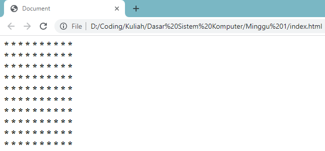
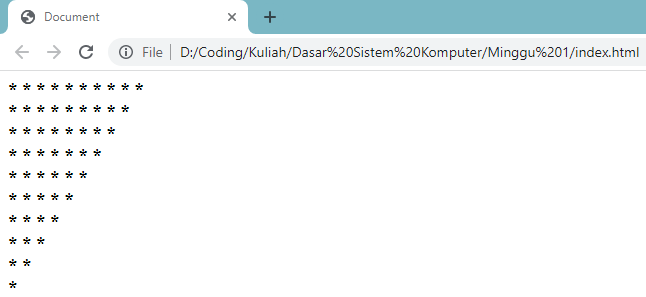

Bagi seluruh siswa atau mahasiswa yang mengambil studi informatika di Indonesia, pasti pernah mendapatkan tugas mencetak pola asterisk menggunakan looping setidaknya sekali. Hal ini sudah seperti tugas template bagi kita ketika belajar materi looping pada pemrograman.
Nah, kebetulan Jo dapat tugas dari dosen untuk membuat artikel yang berisi tutorial cara membuat pola menggunakan JavaScript. Pada artikel ini, Jo akan membuat pola berbentuk segi empat dan segitiga dalam bentuk simbol asterisk. Kalian bebas menggunakan bahasa apa saja karena pada dasarnya memiliki logika yang sama.
Karena disini tidak membahas dari dasar, jadi Jo sarankan kalian membaca dan mempelajari pre-requisite dulu ya supaya dapat memahami kode dan logika yang ada dengan baik. So, let's get started!
Sebelum masuk ke logika perulangan, pertama kita buat terlebih dahulu struktur file HTML dan JavaScript nya. Buat satu tag dengan id tertentu, dan jangan lupa hubungkan dengan file JavaScript kalian. Untuk contohnya bisa lihat code snap dibawah.
Untuk membuat pola segi empat, kita memerlukan dua statement perulangan. Perulangan pertama digunakan untuk membuat baris baru ketika perulangan kedua telah selesai. Sedangkan perulangan kedua digunakan untuk mencetak asterisk sebanyak yang kita inginkan. Pada contoh dibawah Jo menggunakan 10 asterisk.
Untuk melihat hasilnya, silahkan buka file HTML tadi menggunakan web browser kalian. Output akan terlihat seperti gambar dibawah.
Pada bentuk-bentuk selanjutnya Jo akan membagikan berbagai pola yang sudah dicoba. Kalian bisa bereksplorasi dengan logika perulangan yang telah dijelaskan sebelumnya.
Sintaks kode JavaScript
Output pola asterisk
Sintaks kode JavaScript
Output pola asterisk
Jadi itulah tutorial cara membuat pola asterisk menggunakan looping pada JavaScript. Cukup seru bukan? kita bisa bermain-main logika dan menampilkannya pada website statis sederhana. Akhir kata, terima kasih. Keep coding, and stay awesome!